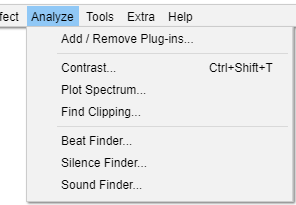

Analyze Menu
Although by default, no keyboard shortcuts are provided for most of the analysis tools, it is possible to set up your own shortcut for any Analyze command. For instructions on how to do this please see Keyboard Preferences.
- Click, or hover, on any menu item in the image to read about that command. Skip the image
- 
- Many of the analysis tools shipped in Audacity are Nyquist plug-ins which can be edited in any text editor. See Nyquist Plug-ins Reference on our Wiki for more details about the Nyquist format. You can download additional Nyquist analysis plug-ins. The built-in analyzers are LADSPA effects. Some additional LADSPA analysis plug-ins for Linux can be downloaded from http://www.ladspa.org/.
- The description page for each shipped analysis effect (accessed by the links below) shows an image of the interface and its default settings.
Audacity's Analysis Tools
- There are three built-in LADSPA analysis tools: Contrast, Plot Spectrum and Find Clipping
- There are five Nyquist plug-in analysis tools shipped with Audacity: Beat Finder, Regular Interval Labels, Sample Data Export, Silence Finder and Sound Finder
- Vamp Analysis Plug-ins can also be added.
Add / Remove Plug-ins...
Selecting this option from the Analyze Menu (or the Effect Menu or Generate Menu) takes you to a dialog which enables you to load and unload Analyzers (and Effects and Generators) from Audacity. This enables you to customize your Analyze Menu making it shorter or longer as required. For details see Plug-in Manager: Effects, Generators and Analyzers.
See also this list of available Nyquist analyzer plug-ins on the Audacity Wiki, that you can easily download and add to Audacity.
Built-in LADSPA analysis tools
Contrast... Ctrl + Shift + T
Analyzes a selected, single non-stereo audio track to determine the average rms difference in volume (contrast) between foreground (the speech) and background (music, audience noise or similar). The purpose is to determine if the speech will be intelligible to the hard of hearing.
Plot Spectrum...
Takes the selected audio (which is a set of sound pressure values at points in time) and converts it to a graph of frequencies (the horizontal scale in Hz) against amplitudes (the vertical scale in dB).
Find Clipping...
Displays runs of clipped samples in a Label Track, as a screen-reader accessible alternative to . A run must include at least one clipped sample, but may include unclipped samples too.
Nyquist Plug-in analysis tools shipped with Audacity
- On Windows the "Plug-Ins" folder is in the directory where Audacity resides - usually C:\Program Files on 32-bit Windows or C:\Program Files (x86) on 64-bit Windows.
- On Mac the "Plug-Ins" folder is at ~/Library/Application Support/audacity/Plug-Ins.
- On Linux, the "plug-ins" folder is in usr/share/audacity if you installed an Audacity package supplied by your distribution, or usr/local/share/audacity if you compiled Audacity from source code. Optionally a "plug-ins" folder can be created in the home directory thus: ~/.audacity-files/plug-ins (you can also call the folder "plugins").
To load the new effects into Audacity so they are available in the menu, use the Plug-in Manager: Effects, Generators and Analyzers dialog.
Beat Finder...
Attempts to place labels at beats which are much louder than the surrounding audio. It's a fairly rough and ready tool, and will not necessarily work well on a typical modern pop music track with compressed dynamic range.
Regular Interval Labels...
Places labels in a long track so as to divide it into smaller, equally sized segments. For example, this can be useful for distributing a large file on the internet. You can either choose the number of labels to be created, or the interval between them. Each label produced contains the chosen label text.
Sample Data Export...
Reads the values of successive samples from the selected audio and prints this data to a plain text, CSV or HTML file.
Silence Finder...
Divides a track up by placing point labels inside areas of silence. Use this if you just want to split the recording into tracks at a specific point without removing the silences between them.
Sound Finder...
Divides a track up by placing region labels for areas of sound that are separated by silence. Use this to make the labels show the exact region of each track to be exported. This lets you remove some or all of the silence between the tracks.
Vamp Analysis Plug-ins
You can also add some additional analysis tools in the Vamp plug-in format for viewing and analysing the descriptive contents of music audio files. Typical things that a Vamp plug-in might calculate include the locations of moments such as note onset times and power or fundamental frequency data. Plug-ins that produce graphs or other visuals will not work in Audacity, only plug-ins that are suitable for writing to labels.
To add a new VAMP analysis tool, add the plug-in's DLL, DYLIB or SO file (and any supplied category (CAT) or RDF (TTL or N3) files) to one of the paths listed in the green box below.
To run a Vamp plug-in, select the audio and run the plug-in from the menu. An annotated label track appears showing the result. {{note|
| Currently Audacity cannot load Vamp plug-ins from the Audacity "Plug-Ins" folder. |
Vamp plug-ins are loaded from the following standard directories each time you launch Audacity:
- On all platforms: any directories listed in the VAMP_PATH environment variable
- additionally on Windows:
- C:\Program Files\Vamp Plugins on Windows 32-bit or C:\Program Files (x86)\Vamp Plugins on Windows 64-bit.
- additionally on OS X:
- ~/Library/Audio/Plug-Ins/Vamp (user plug-ins)
- /Library/Audio/Plug-Ins/Vamp (system-wide plug-ins)
- additionally on Linux/Unix:
- $HOME/vamp
- $HOME/.vamp
- /usr/local/lib/vamp (user plug-ins)
- /usr/lib/vamp (system-wide plug-ins).